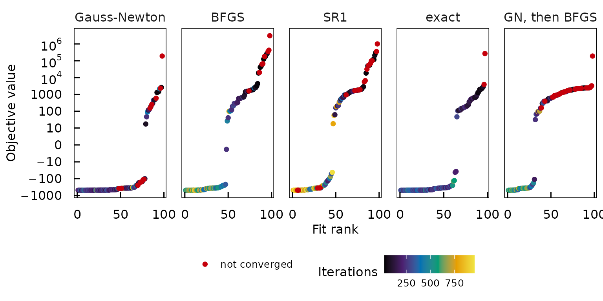

trust() minimizes \(f(\theta)\), \(-2
\log L\) or \(-2 \log\) of the
posterior, by a trust-region method on the exact gradient [1].
Arguments and usage: Optimization.
Trust-region method
At the iterate \(\theta_k\) with the
gradient \(g\) and a symmetric
approximation \(H\) of the Hessian,
trust() minimizes the quadratic model of the objective
inside a ball,
\[\min_{s} \; m(s) = g^\top s + \tfrac{1}{2}\, s^\top H s \quad \text{subject to} \quad \lVert s \rVert \le r . \tag{1}\]
The ratio of actual to predicted decrease decides on the step and the radius \(r\). Subproblem, radius, bounds and termination are the same for every source of \(H\) and on the sparse path.
Trust-region subproblem
trust() solves the subproblem (1) exactly, through the
full eigendecomposition of \(H\) [2]. The
solution satisfies \((H + \nu I)\, s =
-g\) with a multiplier \(\nu \ge
0\) that makes \(H + \nu I\)
positive semidefinite and vanishes unless the step reaches the boundary,
\(\lVert s \rVert = r\). With \(H = Q \Lambda Q^\top\), eigenvalues \(\lambda_i\) and \(\gamma = Q^\top g\), the step
\[s(\nu) = -Q (\Lambda + \nu I)^{-1} \gamma \tag{2}\]
solves the subproblem when \(\nu \ge \max(0, -\lambda_{\min})\) and either \(\nu = 0\) with \(\lVert s \rVert \le r\), or \(\nu > 0\) with \(\lVert s \rVert = r\). The second case is a root of the secular equation
\[\phi(\nu) = \frac{1}{r} - \frac{1}{\lVert s(\nu) \rVert} = \frac{1}{r} - \Big( \sum_i \frac{\gamma_i^2}{(\lambda_i + \nu)^2} \Big)^{-1/2}, \tag{3}\]
nearly linear for \(\nu > -\lambda_{\min}\), solved by bisection on a bracket of \(\nu\), every evaluation \(O(n_\theta)\) in the eigenbasis. If \(\gamma_i = 0\) for every eigenvector of \(\lambda_{\min} < 0\) and \(\lVert s(-\lambda_{\min}) \rVert \le r\) (hard case), the solution is \(s(-\lambda_{\min}) + \tau q_{\min}\) with \(\lVert s \rVert = r\); otherwise it is the root of (3). Negative curvature is followed to the boundary. The eigendecomposition costs \(O(n_\theta^3)\); sparse Hessians use the sparse path.
Radius update
With the ratio of actual to predicted decrease
\[\rho_k = \frac{f(\theta_k) - f(\theta_k + s_k)}{-m_k(s_k)}, \tag{4}\]
the radius is updated with \(r_{\max}\) = rmax:
\[r_{k+1} = \begin{cases} \min(r_k/4,\, \lVert s_k \rVert / 4), & \rho_k < 1/4, \\ \min(2 r_k,\, r_{\max}), & \rho_k > 3/4 \text{ and } \lVert s_k \rVert \ge 0.9\, r_k, \\ r_k, & \text{otherwise.} \end{cases} \tag{5}\]
A step with \(\rho_k < 1/4\) is
rejected. The radius grows only when the step reached the boundary.
Under boundary = "clip" the radius shrinks to \(r_k/4\), grows after every step that is not
the Newton step, and a step that lowers \(f\) is accepted where the value or model
test ends the run. The first radius is rinit. A trial point
where the objective fails or is not finite counts as rejected; three in
a row end the run ("objfun").
Nonmonotone acceptance
With stepControl$nonmonotone \(= \eta \in (0, 1)\), the actual decrease is
measured from a weighted average of past values [3],
\[Q_{k+1} = \eta Q_k + 1, \qquad C_{k+1} = \frac{\eta Q_k C_k + f(\theta_{k+1})}{Q_{k+1}}, \tag{6}\]
updated at accepted steps, and \(\rho_k = \bigl(C_k - f(\theta_k + s_k)\bigr) / \bigl(-m_k(s_k)\bigr)\); \(\eta = 0\) recovers (4). The result is the best iterate visited; the termination tests read \(f\) itself.
Bound constraints
boundary = "reflective" is the interior method of
Coleman and Li [4]. With \(v_i\) the signed distance to the bound in
the descent direction \(-g_i\) (1 if
infinite), \(D = \operatorname{diag}(\lvert v
\rvert^{1/2})\) and \(J^v\) the
diagonal of \(\partial \lvert v \rvert /
\partial \theta\), the subproblem is solved in the scaled
variables
\[\hat g = D g, \qquad \hat B = D H D + \operatorname{diag}(g)\, J^v , \tag{7}\]
The optimality measure of gtol, \(\max_i \lvert v_i g_i \rvert\), vanishes at
interior stationary points and at active bounds. A step leaving the box
is cut to the fraction \(\max(\texttt{thetaMax}, 1 - \text{optimality
measure})\) of the distance (thetaMax = 0.99995),
reflected, or replaced by scaled steepest descent, whichever the model
rates best. The ratio (4) and the step length in (5) are those of the
scaled model of (7). boundary = "clip" removes active
parameters from the subproblem and clips the step.
Termination criteria
The tests are listed in Optimization.
Only "gradient" tests optimality; "fvalue",
"preddiff" and "step" read the quadratic model
and can stop at a non-stationary point if \(H\) is poor. While further phases follow,
these tests hand over to the next one (Hessian
phases); the last quasi-Newton phase therefore ends only on the
gradient, stagnation, the radius, iterlim or a failing
objective [5]. For an ODE integrated
at relative tolerance \(\epsilon\) a
weighted residual \(r_j\) of a
prediction \(f_j\) has an error of
about \(\epsilon f_j / \sigma_j\), so
the value has one of about \(2 \epsilon \sum_j
\lvert r_j f_j \rvert / \sigma_j\), growing with the amount of
data, the gradient more; ftol and gtol belong
at or above these noise floors.
Sources of the model Hessian
Gauss-Newton approximation
The Hessian of \(\sum_j r_j^2\) in the weighted residuals \(r_j\) is the Gauss-Newton Hessian \(2 J^\top J\) plus a term with the second derivatives of the residuals (Sensitivities and Hessians). Gauss-Newton keeps the first, positive semidefinite term, which comes free with the gradient; the second is small where residuals scatter around zero. A Gaussian prior adds twice the prior precision on the diagonal (Likelihood and prior). With a parameter-dependent error model the matrix is \(J^\top L J\), not necessarily semidefinite (Sensitivities and Hessians). With large residuals the Gauss-Newton model can stop short of the minimum.
Exact Hessian
hessianMethod = "exact" runs Newton’s method in the
trust region with second-order sensitivities (Sensitivities and Hessians), exact
also for large residuals and at a much higher cost per iteration.
BFGS update
Both quasi-Newton updates use the secant pair
\[s_k = \theta_{k+1} - \theta_k, \qquad y_k = \nabla f(\theta_{k+1}) - \nabla f(\theta_k), \tag{8}\]
with the secant equation \(B_{k+1} s_k = y_k\). BFGS keeps \(B\) positive definite, which needs \(s^\top y > 0\); the pair is damped [6]:
\[\vartheta = \begin{cases} 1, & s^\top y \ge 0.2\, s^\top B s, \\ \dfrac{0.8\, s^\top B s}{s^\top B s - s^\top y}, & \text{otherwise,} \end{cases} \qquad \tilde y = \vartheta y + (1 - \vartheta) B s , \tag{9}\]
the update is
\[B_{k+1} = B_k - \frac{B_k s\, s^\top B_k}{s^\top B_k s} + \frac{\tilde y\, \tilde y^\top}{s^\top \tilde y}. \tag{10}\]
Then \(s^\top \tilde y \ge 0.2\, s^\top B s
> 0\). qnCautious skips pairs with \(s^\top y \le c \lVert s \rVert \lVert y
\rVert\) (counted in qnSkipped), a cautious update
in the sense of [7], whose test scales with the
gradient instead. BFGS updates from accepted steps only.
SR1 update
SR1 satisfies the secant equation without definiteness. With \(w = y - B_k s\),
\[B_{k+1} = B_k + \frac{w\, w^\top}{w^\top s}, \tag{11}\]
skipped when \(\lvert w^\top s \rvert \le
10^{-8} \lVert s \rVert \lVert w \rVert\). SR1 approaches the
true Hessian, indefinite regions included. Rejected trial points also
give valid pairs [5]; qnRejected
(default for "sr1") uses them.
Seed and memory
Far from the optimum \(J^\top J\) is
large and ill-conditioned; BFGS corrects a seed that is wrong by orders
of magnitude only slowly, SR1 overwrites it. With qnMemory
\(= m > 0\) the approximation is
rebuilt from \(\gamma I\), \(\gamma = y^\top y / s^\top y\) [8], and the
last \(m\) pairs, the curvature of
L-BFGS [5] as an explicit matrix.
There is no diagonal preconditioner: on the log scale the
ill-conditioning of sloppy models lies along rotated directions [9].
Hessian phases
A phase hands over to the next where a value, model, step or
stagnation stop or its iterlim would end the run;
"gradient" ends the run. A handover resets the radius to
rinit and seeds a quasi-Newton phase with the Gauss-Newton
Hessian, as in Fides [10].
Sparse Hessians
A sparse Hessian \(H = S + U D
U^\top\), \(S\) sparse and \(U\) of few columns \(m\) with the diagonal \(D\), takes the same steps without the
eigendecomposition. The root of (3) is found by Newton’s method on \(1/\lVert s(\nu) \rVert\), safeguarded by a
bracket of \(\nu\), to a relative \(10^{-12}\): every iterate factorizes \(S + \nu I\) by sparse Cholesky, with the
ordering of one symbolic analysis per pattern, and adds \(U D U^\top\) by the Woodbury identity
through \(K = D^{-1} + U^\top (S + \nu I)^{-1}
U\). \(H + \nu I\) is positive
definite where \(S + \nu I\) has \(p\) negative eigenvalues, \(K\) has \(q\) positive ones and \(p + q\) equals the number of positive
entries of \(D\); an indefinite \(S + \nu I\) is factorized as \(L \Delta L^\top\) for \(p\). In the hard case the eigenvector of
\(\lambda_{\min}\) comes from inverse
iteration on the factor at \(\nu\) next
to \(-\lambda_{\min}\).
sparse = "auto" compares the flops of a step, about eight
factorizations with \(m + 2\) solves
each from the symbolic analysis, with the \(4
n_\theta^3\) of the eigendecomposition.
L1 penalties
trustL1() minimizes the objective plus an L1 penalty on
some of the parameters [11],
\[f(\theta) + \sum_{i \in P} \lambda_i \lvert \theta_i - \mu_i \rvert , \tag{12}\]
with penalized parameters \(P\),
references \(\mu_i\) and strengths
\(\lambda_i\). trustL1()
runs the trust region with the Gauss-Newton Hessian and two changes: a
parameter on the kink is removed from (1) while \(\lvert \partial f / \partial \theta_i \rvert \le
\lambda_i\), and a step across the kink is cut back onto \(\mu_i\), so zero differences are exact.
Further penalties are a one-sided one,
\[\lambda_i \max(0,\, \mu_i - \theta_i) , \tag{13}\]
which keeps a parameter on the kink while \(0 \le \partial f / \partial \theta_i \le \lambda_i\); a gate \(\lambda_i (\theta_i - \mu_i)\) with \(\theta_i \ge \mu_i\), which keeps it there while \(\partial f / \partial \theta_i \ge -\lambda_i\); and a fused block \(B\), the clustered lasso [12] in the L1 form (Hauber et al. favor the exponent 0.8),
\[\lambda \sum_{p < q \in B} w_{pq}\, \lvert \theta_p - \theta_q \rvert , \tag{14}\]
optionally with an anchor; equal parameters move as one until the data split them.
Forward and reverse derivatives on the Oppelt fit
Each source needs other derivatives (Sensitivities and Hessians):
| source | derivatives per evaluation | sweep |
|---|---|---|
| Gauss-Newton | value, gradient and \(J^\top L J\) from the forward sensitivities, one tangent per parameter | forward |
| BFGS, SR1 | value and gradient; the gradient from one backward sweep of the adjoint system | reverse |
| exact | value, gradient and exact Hessian by forward over reverse | reverse, deriv2 = TRUE
|
Seconds per evaluation of the data term at the best fit, minimum of
ten, from sensitivities.R:
timing <- readRDS(file.path(oppelt, "results", "sensitivities.rds"))$timing
timing
#> value forward reverse forward-reverse
#> 0.004 0.167 0.011 0.724optimizers.R fits from the same 100 prior draws with
Gauss-Newton, BFGS and SR1 on the reverse gradient from the identity,
the exact Hessian, and 20 Gauss-Newton iterations followed by BFGS:
# 100 starts drawn from the prior, as in fit.R. BFGS and SR1 take the reverse gradient and start
# from the identity; the BFGS phase after Gauss-Newton starts from the Gauss-Newton Hessian
free <- setdiff(names(mu), names(gauge))
starts <- msParframe(mu[free], n = 100, seed = 2, sd = sigma[free], keepfirst = FALSE)
methods <- list(
`Gauss-Newton` = list(hessianMethod = "gn"),
BFGS = list(hessianMethod = "bfgs", sweep = "reverse", qnControl = list(hessianInit = "identity")),
SR1 = list(hessianMethod = "sr1", sweep = "reverse", qnControl = list(hessianInit = "identity")),
exact = list(hessianMethod = "exact", sweep = "reverse"),
`GN, then BFGS` = list(phases = list(list(hessianMethod = "gn", iterlim = 20),
list(hessianMethod = "bfgs"))))
# one fit of start `i` by method `m`, with the wall time
fitOne <- function(m, i) {
t0 <- proc.time()[["elapsed"]]
fit <- tryCatch(do.call(trust, c(list(objR, setNames(as.numeric(starts[i, free]), free),
fixed = gauge, iterlim = 1000, tolControl = tolerances),
methods[[m]])), error = function(e) NULL)
data.frame(method = m, start = i, value = if (is.null(fit)) NA_real_ else fit$value,
converged = !is.null(fit) && isTRUE(fit$converged),
iterations = if (is.null(fit)) NA_integer_ else as.integer(fit$iterations),
elapsed = proc.time()[["elapsed"]] - t0)
}
tasks <- expand.grid(method = names(methods), start = seq_len(nrow(starts)), stringsAsFactors = FALSE)
optimizers <- do.call(rbind, parallel::mclapply(seq_len(nrow(tasks)), function(k)
fitOne(tasks$method[k], tasks$start[k]), mc.cores = getOption("dMod2.cores"),
mc.preschedule = FALSE))
opt <- readRDS(file.path(oppelt, "results", "optimizers.rds"))
opt$method <- factor(opt$method, unique(opt$method))
top <- min(opt$value, na.rm = TRUE)
summary <- do.call(rbind, lapply(split(opt, opt$method), function(d) data.frame(
starts = nrow(d), failed = sum(is.na(d$value)), converged = sum(d$converged),
hits = sum(d$value < top + 5, na.rm = TRUE), iterations = median(d$iterations, na.rm = TRUE),
iterlim = sum(d$iterations >= 1000, na.rm = TRUE), seconds = round(median(d$elapsed, na.rm = TRUE), 1),
secondsPerHit = round(sum(d$elapsed, na.rm = TRUE) / max(1, sum(d$value < top + 5, na.rm = TRUE))))))
summary
#> starts failed converged hits iterations iterlim seconds
#> Gauss-Newton 100 2 86 24 233.0 10 18.4
#> BFGS 100 2 90 14 374.5 0 4.8
#> SR1 100 2 80 9 324.5 6 4.4
#> exact 100 3 95 20 255.0 0 96.4
#> GN, then BFGS 100 2 70 5 465.5 23 7.4
#> secondsPerHit
#> Gauss-Newton 116
#> BFGS 36
#> SR1 65
#> exact 524
#> GN, then BFGS 142Medians over starts; a hit ends within 5 of the best value;
iterlim counts the runs stopped by the iteration limit;
failed counts starts without result:
plotValues(split(opt, opt$method), pseudoLog = TRUE) + ggplot2::theme(legend.position = "bottom")
A reverse gradient costs about 1/15 of the forward sensitivities, an exact Hessian by forward over reverse about 4 times. Gauss-Newton reaches the lowest plateaus most often, exact converges most often, and BFGS needs the least time per hit. Gauss-Newton followed by BFGS stops at the iteration limit in 23 runs: the BFGS phase starts from the Gauss-Newton Hessian far from the optimum (Seed and memory).
Stored results
-
examples/oppeltNPJSystBiolAppl2018/results/optimizers.rdsandsensitivities.rds: from the scriptsoptimizers.Randsensitivities.Rof the project.
Reference: trust(), trustL1(),
mstrust(), msParframe(),
plotValues()